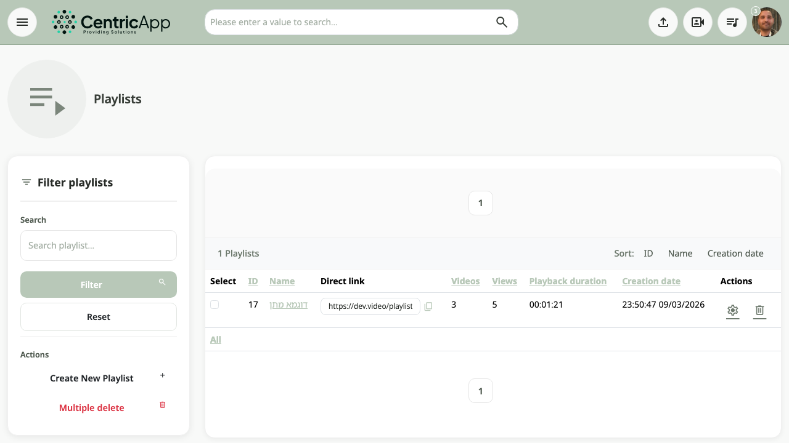
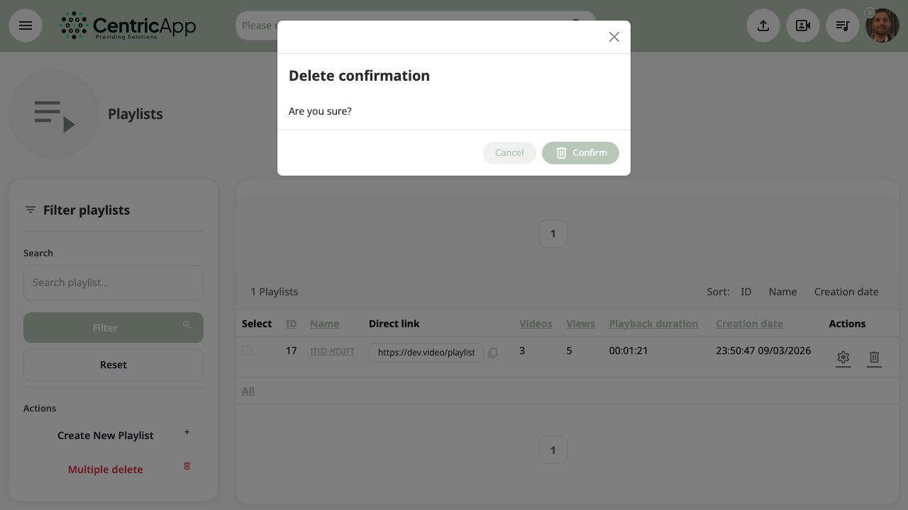
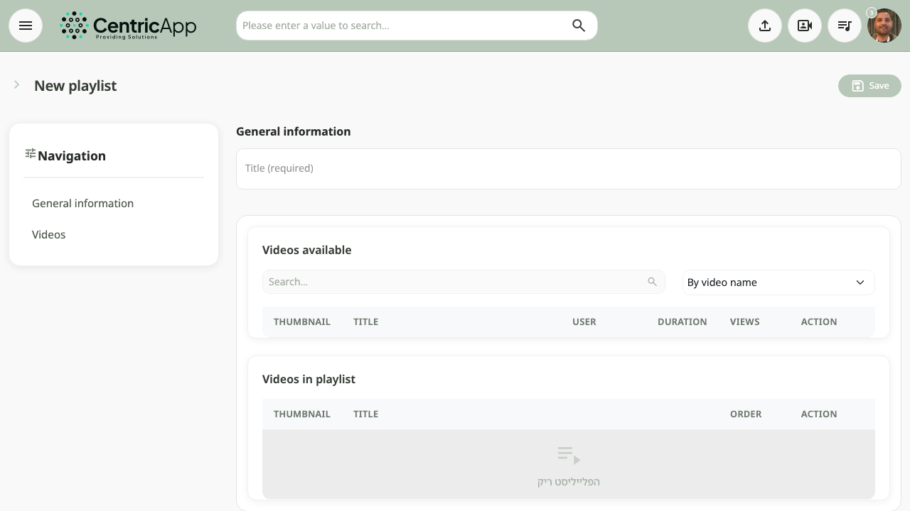

Overview
The Playlists page is accessible from the main menu (Playlist button) or at /playlist (for example https://dev.video/playlist). The page shows your playlist list, filtering, new creation, and bulk deletion.

Accessing the page
In the top menu, click Playlist (or Playlists). Users see only their own playlists.
Filtering and actions (sidebar)
On the left:
- Search – enter text to search playlists (by name), and click Filter. Reset – clears and refreshes.
- Create new playlist – goes to the new playlist form (
/playlist/instance). - Bulk delete – opens a dialog to confirm deleting selected playlists (selection via checkbox on each row).

Playlists table
In the center, a table shows: Selection (checkbox), ID, Name, Direct link (URL to copy), Videos, Views, Play duration, Creation date, Actions (settings, delete).
- Clicking the playlist Name – goes to playlist view.
- Settings (gear icon) – goes to playlist edit (title and video list).
- Delete (trash icon) – opens a dialog to confirm deleting the single playlist.
You can sort by ID, name, creation date, and more by clicking column headers. At the bottom of the table: All – check/uncheck all rows.
Creating a new playlist and editing a playlist
After clicking Create new playlist or Settings next to an existing playlist – a form opens with:
- General information – Title (required) field for the playlist.
- Available videos – table of videos in the system; search by video name or by user, and button to add a video to the playlist.
- Videos in playlist – list of added videos; order and remove action.
When editing: Save button saves changes; Delete deletes the playlist (with confirmation).

Viewing a playlist
Clicking the playlist name or going to /playlist/{id} – goes to the view page: videos in the playlist are shown in order, with navigation between videos. Depending on settings, buttons such as "Settings" appear to edit the video list.